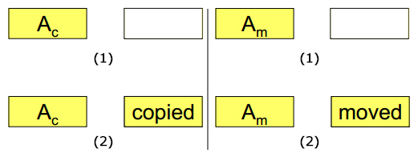
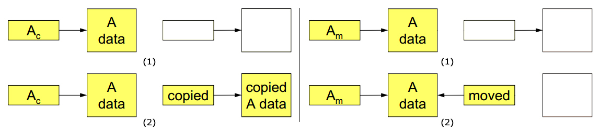

Move semantics and rvalue references in C++11
Posted: July 11, 2013 | More posts about C++ C++11
Questions we want to answer in this post
- Why do we need move semantics?
- What's the deal with rvalues, lvalues, and their references?
- How to make use of the move semantics?
- How do we force a move?
- What are other uses for rvalue references?
Why do we need move semantics?
To avoid the wasted space of temporary objects and the wasted time of copying the data.
- E.g. 1: Temporary objects created when assigning a result of a function to a local variable.
typedef std::vector<std::string> StrVec; StrVec populateStrVec() { StrVec sVctor; // Fill the sVector with let's say 10,000 strings ... return sVector; } StrVec vs; // Copy the return value object to vt, then destroy return value object // And if we have a (really) naive compiler, it could actually copy the // sVector to a temp object which is then copied to the return object. // Both would be destroyed later on. vs = createStrVec(); // A function that removes a substring from all the strings in a vector. // Reason it takes StrVec as const reference: // we don't want to modify the original vector // If it wasn't passed by reference we would have the blood of another // temp obj on our hands. StrVec removeSubstr(const StrVec& sVector, const std::string& substring) { // Remove all the instance of substring from sVector ... return sVector; } // Copy return value object to vt, then destroy return value object // And if we have a (really) naive compiler, it could actually copy the // sVector to a temp object which is then copied to the return object. // Both would be destroyed later on. StrVec filtered_vs(removeSubstr(vs));
-
E.g. 2: The operations of
std::vectorlikepush_back(),insert(),emplace(), etc. which eventually need to modify the capacity of vector and does this by copying its elements from the old memory block to the newly-allocated memory block. -
E.g. 3: The swap operation as we all know it depends on using a temporary object to exchange (by copying) data from one variable to another.
template<class T> void swap(T& a, T& b) { T temp = a; // Copy data from a to temp (we have 2 copies of a now) a = b; // Copy data from b to a (we have 2 copies of b now) b = temp; // Copy data from temp to b (we have 2 copies of a now) }
Moving provides most significance when we have objects that contain data allocated in separate memory and we want to do a deep copy. We no longer have to copy all the data to a newly allocated location. Instead, copying the main object and then moving the pointers/references to the new objects will suffice and will be much better memory- and performance-wise. Performance-wise moving is never slower than copy, and it is often faster.
How is that true?
By comparing the copy and move operations after being carried out on a simple object A as illustrated in the following figure we notice that there are no differences between the move and the copy, both result in the same output; the object is copied to the new location.

However, if we decide to raise the bar a few inches higher and perform the same operations on an object with data object allocated in separate memory, we notice that there is an improvement in which not everything is copied. 
In order to know exactly how does C++ compilers recognize move opportunities and how can we take advantage of them we need to familiarize ourselves with 2 terms: rvalues and lvalues.
What's the deal with rvalues, lvalues, and their references?
- lvalues - Left values
- An expression that represents data whose address can be taken, which can be a named object or dereferenced pointer.
Properties:
- An lvalue provides a (semi)permanent piece of memory.
- Can appear on the left side of an assignment statement.
- rvalues - Right values
- An expression that is not an "lvalue". Alright, that was helpful!
But this is true, an expression is an rvalue if it results in a temporary object that can't be accessed by address. Such expressions can appear on the right side of an assignment statement but not the left. Other examples of rvalues include literals, such as 10.0, and expressions such as x + y. Also, function return values are rvalues, becuase they reside in a temporary memory location that doesn't necessarily persist even until the next statement.
int mInt1 = 4; // mInt is [lvalue] int mInt2= &4; // Error: 4 is [rvalue] so we can't acquire its address int mInt3 = mInt1 * 2 // Everything seems fine, assigning rvalue to lvalue mInt * 2 = 10; // Error: can't assign to rvalue int* pInt; // pInt is [lvalue] std::size_t bar(std::string str); // str is [lvalue], f returns temporary object [rvalue] bar("Hello"); // casting from const char* to std::string creates temp string [rvalue] int& foo(); // function returns reference to variable [lvalue] foo() = 42; // foo() is [lvalue] int foobar(); // function returns temporary int [rvalue] j = foobar(); // foobar() is an [rvalue] int* pInt2 = &foobar(); // Error: cannot take the address of an [rvalues]
- lvalue refernces
- The traditional C++ reference–now called an lvalue reference–binds an identifier to an lvalue.
int* pInt = new int; int& ref1 = pInt; int mInt = 10; int& ref2 = mInt;
- rvalue references
- C++11 introduces a second kind of reference, called an rvalue reference, declared by using
&&, can bind to rvalues—that is, values that can appear on the right-hand side of an assignment expression but for which one cannot apply the address operator. However, binding an rvalue to an rvalue reference results in the value being stored in a location whose address can be taken. This binding of the data to particular addresses is what makes it possible to access the data through the rvalue references.
int&& r1 = 13; int&& r2 = x + y; // which is not allowed for int & double&& r3 = std::sqrt(2.0);
I think you had your fair share of introductions, you must be asking now what are those definitions actually useful for?!
To answer this question, the rvalue reference was introduced mainly to help library designers provide more efficient implementations of certain operations. In fact, rvalue references solve at least two problems:
- Implementing move semantics
- Perfect forwarding
How to make use of the move semantics?
Value movement is safe when the source is an rvalue. Temporaries go away at statement’s end. Rvalue references identify objects that may be moved from.
How can we distinguish between variables and unnamed temporaries? We use overloading. If there is an overload between ordinary lvalue reference and rvalue references then rvalues should prefer the new type and lvalues the ordinary reference
Summary of reference binding rules:
- Lvalues may bind to lvalue references.
- Rvalues may bind to lvalue references to const.
- Rvalues may bind to rvalue references to non-const.
- Lvalues may not bind to rvalue references, otherwise lvalues could be accidentally modified
void foo(X& x); // lvalue reference overload void foo(X&& x); // rvalue reference overload X x; X foobar(); // Function declaration foo(x); // argument is lvalue: calls foo(X&) foo(foobar()); // argument is rvalue: calls foo(X&&)
Some considerations:
- Implementing
void foo(X&);only works with lvalues, but fails to handle rvalues - Implementing
void foo(const X&);works with both lvalues and rvalues, however we won't be able to distinguish between them. - Implementing
void foo(X&&);only works with rvalues.
Use-case - Widgets' Shop
We can definitely use this overloading technique for all our functions, but it isn't really necessary except for copy constructors and assignment operators; where all the temporary objects are being created and dealt with.
struct Part; // Type declaration of Part struct class Widget { public: // Default Constructor and Destructor declarations // ... Widget(const Widget&); // copy constructor Widget(Widget&&); // move constructor Widget& operator=(const Widget&); // copy assignment operation Widget& operator=(Widget&&); // move assignment operation private: Part* pParts; // Pointer to Parts int nItems; // Number of Parts };
Now to the implementation of the move/copy constructors and assignment operators:
// Copy Constructor // Initializer list: initialize nItems from copyFromMe Widget::Widget(const Widget& copyFromMe) : nItems(copyFromMe.nItems) { pParts = new Part[nItems]; for (int i = 0; i < nItems; ++i) { pParts[i] = copyFromMe.pParts[i]; } } // Move constructor // Initializer list: initialize nItems and pParts from moveFromMe Widget::Widget(Widget&& moveFromMe): nItems(moveFromMe.nItems), pParts(moveFromMe.pParts) { // Leave source in valid state moveFromMe.pParts = nullptr; moveFromMe.nItems = 0; } // Copy Assignment Widget& Widget::operator=(const Widget& copyFromMe) { if (this == ©FromMe) { return *this; } delete []pParts; // Delete old data nItems = copyFromMe.nItems; pParts = new Part[nItems]; for (int i = 0; i < nItems; ++i) { pParts[i] = copyFromMe.pParts[i]; } return *this; } // Move assignment Widget& Widget::operator=(Widget && moveFromMe) { if (this == &moveFromMe) { return *this; } delete []pParts; // Delete old data pParts = moveFromMe.pParts; // Take source's value nItems = moveFromMe.nItems; // Leave source in valid state moveFromMe.pParts = nullptr; moveFromMe.nItems = 0; return *this; }
Why do we assign nullptr to moveFromMe.pParts in both move constructor and assignment operator?
Before the point of assignment, both pParts and moveFromMe.pParts pointed to the same data. It would be awkward when the destructor of the temporary object moveFromMe is called after the function terminates, as it releases the memory pointed at by moveFromMe.pParts.
Also, a program shouldn’t call delete twice for the same address. To avoid this problem, the constructor then sets the original pointer to the null pointer because it is not an error to apply delete []to the null pointer. This action of changing the ownership is sometimes referred to as pilfering or appropriation.
An example usage of our class to illustrate the used constructors and assignment operators:
Widget createWidget(); // Factory function declaration Widget w1; Widget w2 = w1; // lvalue src - matches Widget::Widget(const Widget&) -> Copy Constructor Widget w3(createWidget()); // rvalue src - matches Widget::Widget(Widget&&) -> Move Constructor w1 = w2; // lvalue src -> Copy Assignment w3 = Widget(); // rvalue src -> Move Assignment
How do we force a move?
- E.g. 1: In the previously mentioned
swap()function we see that there are no rvalues, consequently no move semantics are used by the compiler to optimize the copying processing.
template<class T> void swap(T& a, T& b) { T temp = a; // Copy data from a to temp (we have 2 copies of a now) a = b; // Copy data from b to a (we have 2 copies of b now) b = temp; // Copy data from temp to b (we have 2 copies of a now) }
However, we know that the move here is completely safe; we want to swap data from one variable to another and skip any temporary objects that might be created in the process. Fortunately, C++ in the spirit of not withholding any opportunities from programmers that prevent them from shooting themselves in the foot, allows us to use move semantics on lvalues as well.
template<class T> void swap(T& a, T& b) { T tmp(std::move(a)); a = std::move(b); b = std::move(tmp); }
- E.g. 2: Another usage of
std::move()is in setters:
class Widget { public: ... void setName(const std::string& newName) { name = newName; } // copy param void setName(std::string&& newName) { name = std::move(newName); } // move param void setCoords(const std::vector<int>& newCoords) { coordinates = newCoords; } // copy param void setCoords(std::vector<int>&& newCoords) { coordinates = std::move(newCoords); } // move param ... private: std::string name; std::vector<int> coordinates; };
However, you should use this with caution unless you don't mind buying a new pair of shoes so often.
Important uses of std::move()
- Usually
std::move()has positive effect on performance, as many standard algorithm utilize move semantics. E.g. Functions likestd::reverse()and sorting algorithms that do in-place sorting, will become more efficient as they now are fully in-place; no temp objects will be created. - Sometimes we have to use
std::move()as there are types that are moveable but not copyable:std::threadstd::unique_pointerstd::fstream
So what's so special about std::move()?
It turns out that the implementation of std::move() is actually really simple, what it does is that it converts its argument to rvalue reference using a static_cast.
We won't go in much depth, but an implementation of std::move() can be boiled down to something similar to:
template<class T> T&& std::move(T& a) noexcept { return static_cast<T&&>(a); }
What are other uses for rvalue references?
As you have noticed in the "not so few" code snippets, in which we declared constructors, assignment operators and setters to support move semantics, we had to write overloaded functions to properly handle copies and moves. This can be really inefficient, it will result in code bloat and increases the chance of introducing bugs.
So we ask: "How do we solve this devious problem?", and Perfect forwarding comes to the rescue and saves the day, but that's just another tale for another post.
References
This post started as the notes I took while examining the following resources:
- An article by Alex Allain title "Move semantics and rvalue references in C++11".
- A talk given by Scott Meyers titled "Move Semantics,Perfect Forwarding, and Rvalue references".